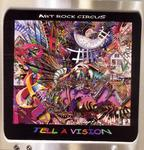

| Artist: | Art Rock Circus |
| Title: | Tell A Vision |
| Label: | Tributary Records 619447000728 |
| Length(s): | 40+44 minutes |
| Year(s) of release: | 2005 |
| Month of review: | [10/2005] |
| 1) | Tell A Vision | 19.58 |
| 2) | The Cell | 6.52 |
| 3) | Art Of Bells | 0.55 |
| 4) | Begins Before Becomes | 5.21 |
| 5) | Ballad Of Joan Allen | 6.28 |
Disc 2
| 1) | Oregon Trail Song | 2.44 |
| 2) | Cult On Hammer Hill | 5.13 |
| 3) | Poem From The Sea | 3.34 |
| 4) | String Theory #1 | 1.35 |
| 5) | Rainbow Sun | 7.41 |
| 6) | Desert Song | 4.59 |
| 7) | Song For A Fifth Season | 2.25 |
| 8) | The Ripper | 6.39 |
| 9) | Synopsis In "A" Minor | 9.15 |
The Cell is a song that I like much better. There is a Crimsonesque kind of tension pervading this one, and the song even has some sitar well threaded into the song. But it is especially the telling vocal lines that livens up this song. Part halfway, the pace and rhythmic element increases by adding some rhythm guitar. The vocalist, David Hornbeck, is a good one, showing quite a bit of drama. The final part features mainly meandering guitar, but I am in a forgiving mood. Seriously, it does fit in with the song.
Art Of Bells is only a short interlude before Begins Before Becomes. This one opens with pipe organ and clear female vocals. I must say the melodic element is well taken care of here, and the feeling is one of peace and soothing. The violin adds a bit of spice to the affair. We return to the more singersongwriter style in which acoustic guitar dominates with the Ballad Of Joan Allen. There is a certain lo-finess about the sound here, but I think it is on purpose. David Hornbeck is back to the vocals, and I have to admit seeing that as a big advantage. The music is slow moving, with plenty of brushes and some French style keyboards and the guitars a bit more ethereal than usual. Melodically, this song is quite okay. In fact, except for the opening title track, I have had nothing to complain about. Naming references is difficult, although Hornbeck can sound like David Bowie in places.
We now move the second disc. The opening of Oregon Trail Song is like a slow version of Blue Oyster Cult's Don't Fear The Reaper. The lo-fi and improvised feel reminds me of the psyche genre. We stay acoustic on this one. Cult On Hammer Hill sounds very much like the title track of this double album, at least the bubble keys that lie underneath the music. There are plenty of warm vibes here, but I do not get the impression we are going anywhere. The singing is low and throaty. The middle instrumental part can be quite hard on the ears due to the pitch of the keyboards. Only at the very end do we hear some rock with the guitars going psyche and the keyboards going Emerson style.
Poem From The Sea is a female sung acoustic ballad. String Theory #1 is a different beast. This is a very frolic, and in my opinion distinctive piece, with Milo doing the composing, and I guess the playing too. Rainbow Sun brings recited spoken words and a dark desert like atmosphere. The band actually starts to rock here, with the drummer taking the lead with rolling drums. Also, plenty of sharp guitar work and the organ going solo. The vocal parts however tend to spoil this after an awkward transition. Desert Song opens with mesmerizing electric guitar, a rumbling bass building a dark sinister atmosphere. The vocals go from ear to ear. Later we move to a higher tempo, and an even higher tempo. Neo-prog style this, surprisingly enough, led by a catchy keyboard tune. A likable song, but sometimes I get the feeling that the playing is not always as technically proficient as possible.
Song For A Fifth Season does not sound like Vivaldi, in case you were wondering. Well, the relaxed psyche sounding guitars that dominate (yeh, there is also a triangle on here) give me a sixties feel. A nice tune.
The Ripper is again David Hornbeck at the microphone. It all starts off rather strangely, how are these sounds made? The vocals are bouncy, and a violin adds to the spice of the song, punctuated by piano. Again, I get this sixties or early seventies feel. The song has a strong acoustic/folk element, and if sometimes when I hear Hornbeck I think of Peter Hammill. In the middle, we go for a relaxed instrumental passage. It is hard to imagine this song was only recorded last year or so. The sound and production sound so early seventies.
Synopsis In "A" Minor is a power trio rock song, played by three of the band members. The opening first reminded me of Rush (La Villa Strangiato), but later it shows that this song combines elements of the songs on this album. A hypnotizing guitar trip for the most part, with some up and downs in the tempo (that not always feel very natural).